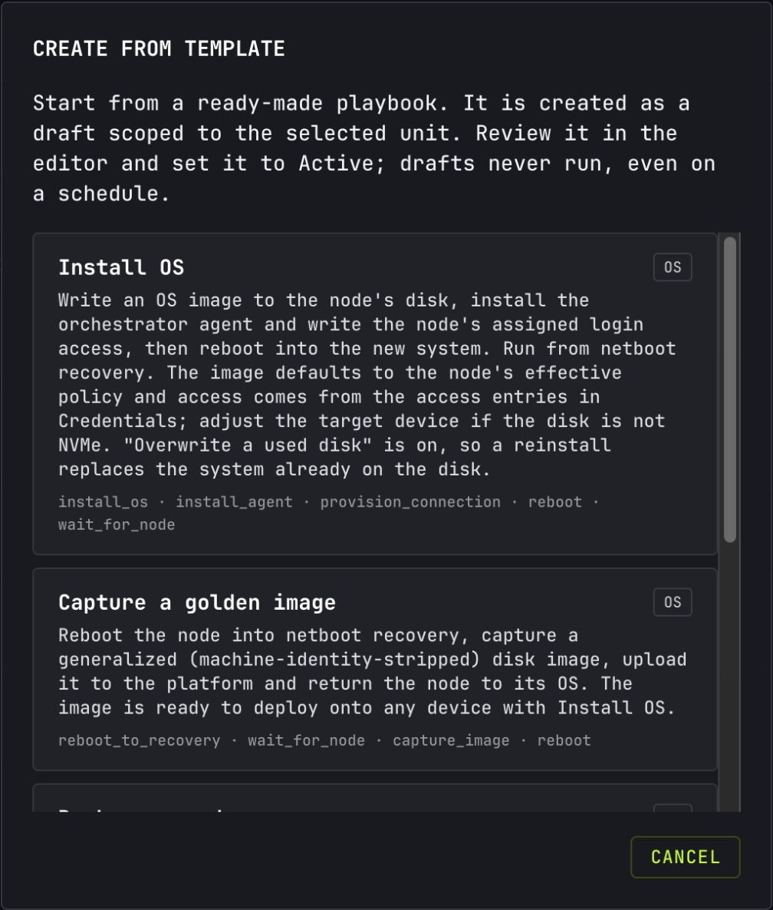
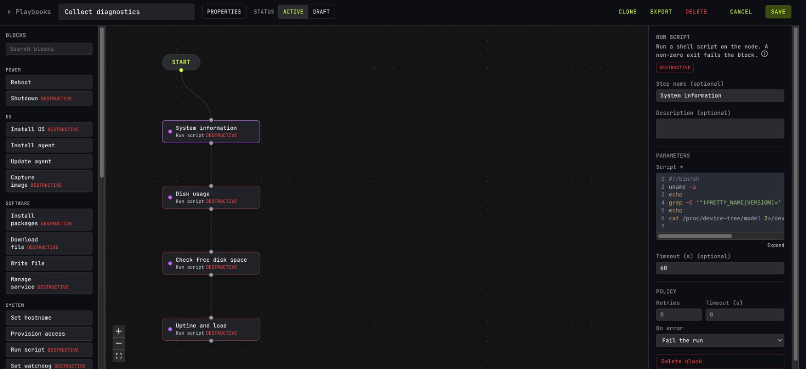
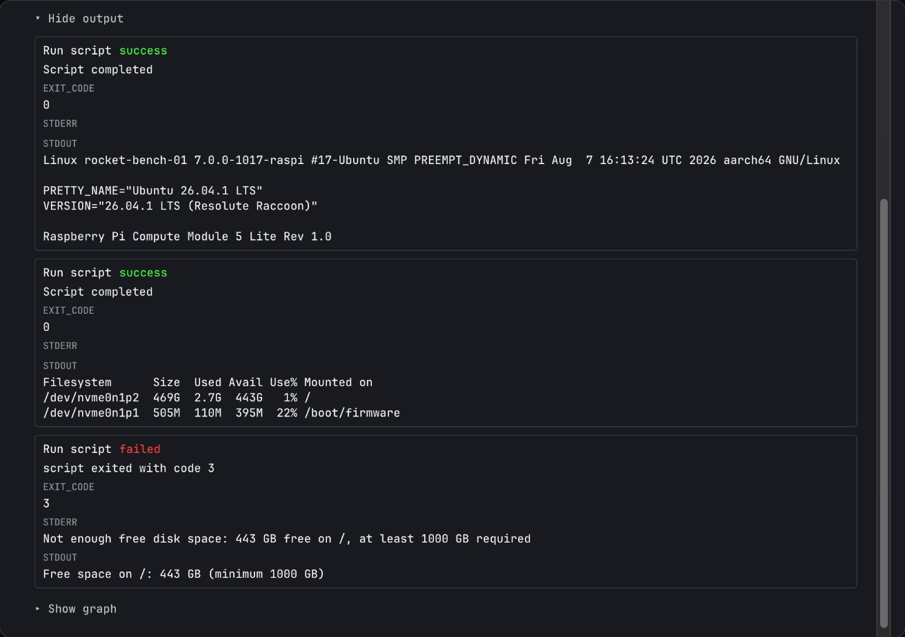

Playbooks: automating work across nodes
Build a list of steps once, then run it on the nodes you pick or on a schedule.
You build playbooks on the Operations page and run them by hand or on a schedule.
Create a playbook
The quickest start is an example. Open Operations, then the Playbooks tab.
- Click From example.
- Click a card: Install OS, Capture a golden image, Back up a node or Restore from a backup.
- Review the steps in the editor.
- Set Status to Active and click Save.

An example is created as a draft. A draft is saved but never offered for a run and never fires on a schedule.
To build one from scratch:
- Click Create playbook.
- Type a name into Playbook name.
- Click a block in the Blocks palette.
- Fill in its Parameters and click Add to canvas. It is added below the last step.
- Repeat for each step.
- Pick Active or Draft next to Status and click Create.

Each block's Policy sets Retries, Timeout (s) and On error. Fail the run stops this node's run at the failed step. Continue goes on to the next one.
Import takes a JSON file exported from another playbook and creates it as a draft. Pick OS images and SSH keys again after importing, because export strips them.
A new playbook is available on all nodes. To limit it to a unit, drag its row onto that unit in the rail on the left. Drop it on All playbooks to undo that.
Use secrets and node values
Write {{secrets.NAME}} in a text field to use a secret or variable that reaches the node (see Secrets and variables). Node values work the same way, for example {{node.hostname}} or {{node.attributes.KEY}}. An unknown reference becomes an empty string.
Which blocks there are
Blocks marked destructive in red can lose data or interrupt service.
- Reboot, Shutdown: power the node.
- Install OS, Capture image: write or save a disk image.
- Install agent, Update agent: manage the agent.
- Install packages, Manage service: software and systemd units.
- Download file, Write file, Update file, Read file, Wait for file: work with files.
- Patch config file, Patch file (from recovery): edit a managed block in a file.
- Run script: run a shell script and capture its output.
- Set hostname, Provision access, Set watchdog: system settings.
- Update boot order, Set boot policy, Reboot to recovery, Allow EEPROM flashing from the OS: boot settings.
- Erase drive: wipe a drive.
- Status check: collect the node's state.
- Wait for node, Wait, Condition, Join: control the flow.
- Save secret, Set node attribute, HTTP request: pass data to other systems.
The editor warns when a block needs a boot state the steps before it do not reach, such as Capture image without Reboot to recovery and Wait for node.
Run a playbook
- On the Playbooks tab, hover the row and click the run icon. From a node, use Run playbook in its panel.
- Tick the nodes. Only nodes inside the playbook's scope are listed.
- If the playbook reboots or contains a destructive block, tick I understand what this will do to the selected nodes.
- Click Run on N nodes.
Each node runs its own copy in parallel, so one failing node does not stop the others. A run uses the playbook as it was when the run started.
On an offline node, scripts, reboots and file reads fail at once, while Set hostname, Patch config file and Update agent wait in the node's queue for up to 24 hours.
Read the result
- Open the Runs tab.
- Click a run to open Run details.
- Click Show output to see each step's result, with
EXIT_CODE,STDERRandSTDOUTfor scripts.
Each node has a bar with one segment per step. Green succeeded, orange is running, red failed.

Here a Collect diagnostics run on rocket-bench-01 failed with script exited with code 3. Show output shows that the step Check free disk space failed, and its STDERR says why: Not enough free disk space: 443 GB free on /, at least 1000 GB required. After fixing the playbook, click Retry 1 failed node to run the current version on the failed nodes only.
Cancel run in Run details stops a run immediately, without asking. Cancelling does not stop a command already running on the device, so a script started before you cancelled runs to its end.
Run on a schedule
- Open the playbook and select the Start block.
- Set Trigger to On a schedule.
- Pick a preset under Cron expression, or Custom for a five-field cron expression.
- Click Save.

Schedules are in UTC. The panel shows the next runs in UTC and in your local time. A scheduled run targets every node in the playbook's scope, offline ones included.